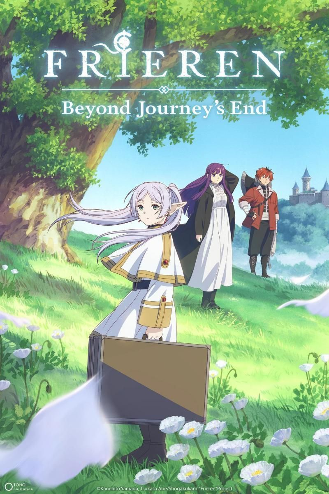
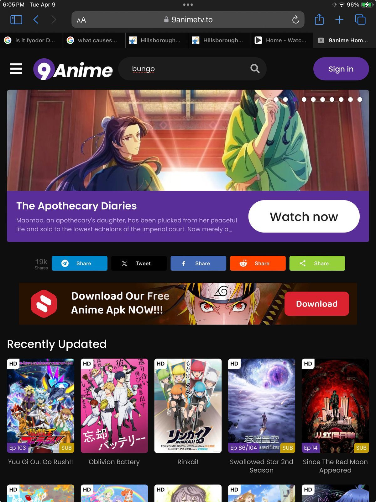
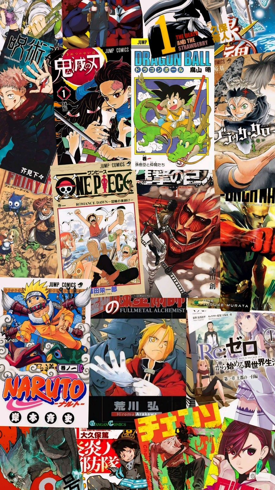

Últimas Noticias

Witch Hat Atelier lanza nuevo tráiler y fans lo llaman candidato a ‘Anime del Año’
El nuevo tráiler de esta adaptación ha generado hype masivo, con fans destacando su animación y atmósfera, incluso llamándolo potencial “Anime del Año”.

Black Clover revela tráiler de su nueva temporada en Jump Festa 2026 y mejora su animación
El fandom reaccionó al primer tráiler de la nueva temporada, destacando mejoras en la calidad visual y el regreso de uno de los shonen más populares.

Frieren y otros grandes animes lideran la temporada de invierno 2026
Crunchyroll confirmó el estreno de nuevas temporadas y series importantes, incluyendo el regreso de títulos muy esperados por los fans.

El futuro del anime cambia: streaming, fandom y nuevos modelos de distribución en 2026
Expertos señalan que el streaming y los cambios en el consumo están transformando la industria y la forma en que los fans interactúan con el anime.

Nuevo anime original Ghost Concert confirma estreno en abril de 2026
Este proyecto musical multimedia tendrá su adaptación animada, combinando música, narrativa y una estrategia enfocada en el fandom y merchandising.

El 2026 se perfila como uno de los años más importantes en la historia del anime
Grandes franquicias como Jujutsu Kaisen, Frieren y One Piece regresan o continúan, consolidando el crecimiento global del anime.